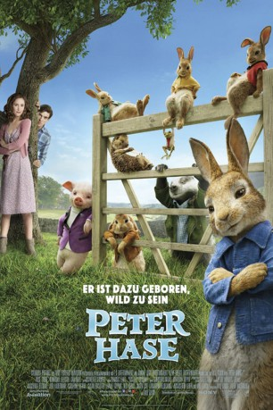
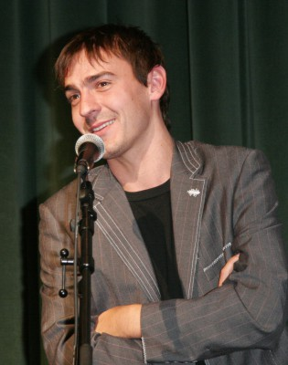
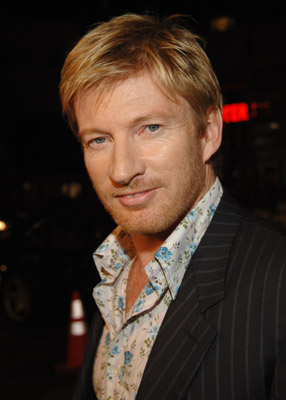

#9263 Peter Hase
 
 IMDB-Wertung: 6.6 / 10
IMDB-Wertung: 6.6 / 10  Metascore: 51
Metascore: 51 
Der Kleinkrieg zwischen Peter und McGregor erreicht bisher ungeahnte Ausmaße, als es um die Kontrolle des umhegten Gemüsegarten von McGregor geht. Desweiteren wird um die warmherzigen und tierlieben Nachbarin konkurriert. Wobei es die Beiden von Lake District bis mitten hinein ins London verschlägt.
Jahr: 2018
Dauer: 94 Minuten
FSK: 0
Land: Australien Studio: Sony Pictures ReleasingTonspuren: DD5.1 - ,
Untertitel:
Auflösung: 1080p (1920x800) Größe: 8263 MB
Genre: Komödie, Abenteuer, Fantasy, Animation/Trick, Familie
Regisseur: Will Gluck
Drehbuch: Rob Lieber
Soundtrack: Dominic Lewis
Darsteller:
 James Corden als Peter Rabbit
James Corden als Peter Rabbit- Fayssal Bazzi als Mr. Tod
 Domhnall Gleeson als Mr. Jeremy Fisher / Mr. Thomas McGregor
Domhnall Gleeson als Mr. Jeremy Fisher / Mr. Thomas McGregor- Sia als Mrs. Tiggy-Winkle
- Colin Moody als Benjamin Bunny
 Sam Neill als Old Mr. McGregor / Tommy Brock
Sam Neill als Old Mr. McGregor / Tommy Brock Margot Robbie als Flopsy / The Narrator
Margot Robbie als Flopsy / The Narrator Elizabeth Debicki als Mopsy
Elizabeth Debicki als Mopsy Daisy Ridley als Cotton-Tail
Daisy Ridley als Cotton-Tail Rose Byrne als Bea / Jemima Puddle-Duck
Rose Byrne als Bea / Jemima Puddle-Duck-  Ewen Leslie als Pigling Bland
 Marianne Jean-Baptiste als General Manager
Marianne Jean-Baptiste als General Manager- Gareth Davies als Bannerman
- Vauxhall Jermaine als Jackson
- Sam Haft als Postman
- Sacha Horler als Taxi Driver - Betty
- Alex Blias als Hardware Clerk - Phil
 Felix Williamson als Derek
Felix Williamson als Derek- Ming-Zhu Hii als Sarabeth
- Rachel Ward als Peter's Mother
 Bryan Brown als Peter's Father
Bryan Brown als Peter's Father-  David Wenham als Johnny Town-Mouse
- Jessica Freedman als Singing Sparrow
- Chris Mann als Singing Sparrow
- Jeremy Azis als Shopper 62 (uncredited)
 Jill Buchanan als Train Commuter (uncredited)
Jill Buchanan als Train Commuter (uncredited) Tom Dab als Tourist at Harrods (uncredited)
Tom Dab als Tourist at Harrods (uncredited) Karl Farrer als Train Commuter (uncredited)
Karl Farrer als Train Commuter (uncredited)- Sian Fleet-Milne als Posh Shopper (uncredited)
 Nina Kumar als Tourist (uncredited)
Nina Kumar als Tourist (uncredited)- Ellie Poussot als Backpacker (uncredited)
 Deborah Rock als Posh Shopper / Tourist (uncredited)
Deborah Rock als Posh Shopper / Tourist (uncredited) Bernardo Santos als Posh Shopper (uncredited)
Bernardo Santos als Posh Shopper (uncredited)- Sonia Sarkis als Customer in Store (uncredited)
- Emma Louise Saunders als Pretty Lady (uncredited)
- Christian Gazal als Felix D'eer
- Natalie Dew als Harrods Worker - Janelle
- Terenia Edwards als Harrods Worker - Siobhan
- Tom Greaves als Harrods Security
- Alexandra Gluck als London Street Rat
- Taryn Gluck als London Street Rat
- Will Reichelt als JW Rooster II
- Dave Lawson als Hardware Clerk - Chris
- Lance Kerfuffle als J. David Scarfington
- Jyla Mabaso als Small Girl
- Shana Halligan als Singing Sparrow
- Katharine Hoye als Singing Sparrow
- Chad Reisser als Singing Sparrow
- Fletcher Sheridan als Singing Sparrow
- Grant Crookes als Passerby (uncredited)
Datei: X:\Kinder Filme (N-Z)\Peter Hase (2018, FSK0, 1920x800).mkv seit 20.07.2018
Festplatte: Kinder-Filme+Trick
 Es gibt insgesamt 87 Filme in der Gruppe 'Kinder Filme (N-Z)'
Es gibt insgesamt 87 Filme in der Gruppe 'Kinder Filme (N-Z)'